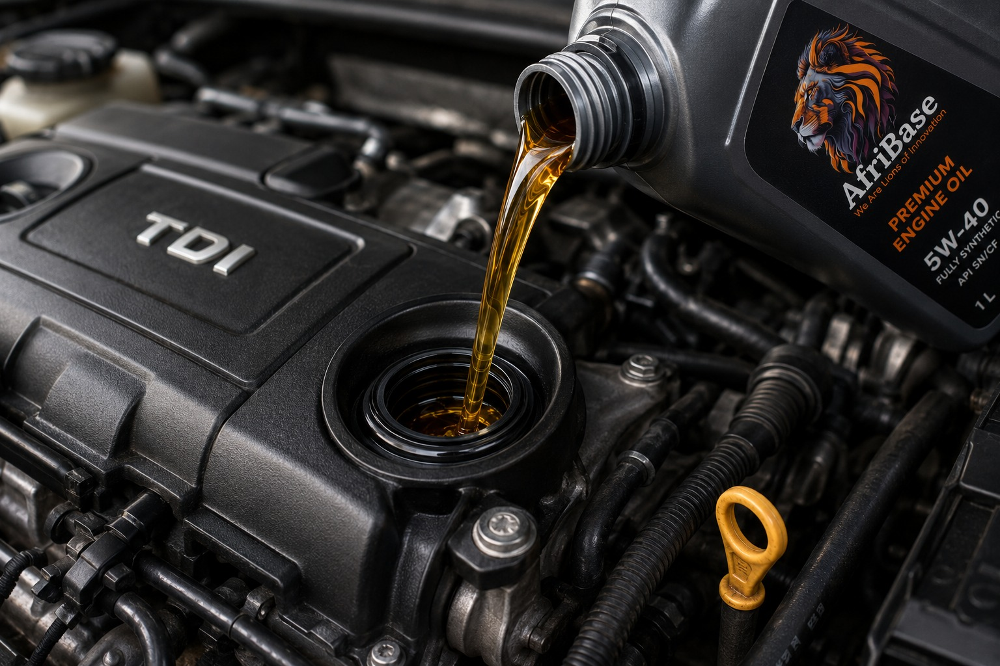

Performance products for every critical movement.
Our technology supports a broad portfolio of consumer automotive, commercial, industrial and mining lubricants, together with ancillary chemical products.
Engineered for real operating conditions.
Product availability and exact performance specifications can be tailored according to customer and distributor requirements.

| Product | Typical Grades / Performance |
|---|---|
| Automotive Engine Oils | SAE 5W30, 5W40, 10W40, 15W40, 20W50 • API CG4/SL, CH4-CI4/SL, CF4/SF, CF/SF |
| Tractor & Transmission Oils | SAE 15W40, 10W30 • STOU API CG4/SF & GL4 • UTTO |
| Automotive & Industrial Gear Oils | SAE 80W, 90, 85W140 • ISO 150–680 • API GL4 & GL5 |
| Compressor Oils | ISO 32, 46, 68, 100 |
| Hydraulic Oils | ISO 32–680 |
| Circulating Oils | ISO 32–100 |
| Slideway Oils | ISO 32, 46, 68, 100, 150, 220 |
| Chainsaw / Cutterbar Oils | LFC 100, LFC 130 |
| 2-Stroke Oils | Mineral and semi-synthetic oil based |
| Automatic Transmission Fluid | ATF DX II & III, virgin oil based |
| Antifreeze | Silicate and nitrite free options |
More than lubricants.
Our SunJoy-aligned ancillary strategy helps customers source multiple workshop and industrial care products from one partner.
Cleaning & Care
Water- and solvent-based degreasers, engine cleaners, car wash, windscreen wash and general-purpose detergents.
Hand Cleaners
Grit and non-grit formulations for workshop and industrial use.
Greases
General purpose LEP 1 & 2, wheel bearing, chassis, open and closed gear, plus moly-disulphide options.
Brake Fluids
DOT 3 and DOT 4 brake-fluid products.
Coolants
Cooling-system products for automotive and industrial applications.
Custom Solutions
Products may be engineered to meet customer-specific needs and operating conditions.
From retail packs to bulk supply.
We can support packaging from 200ml, 500ml, 1L, 5L and 20L containers through to 210L drums and 1,000L IBCs, as well as bulk-load arrangements.
Quality Controls
Our production ecosystem is supported by qualified chemists, engineers and technicians, functional laboratory release testing and independent third-party tribology testing.
Raw materials are sourced through reputable representatives linked to established international manufacturers.